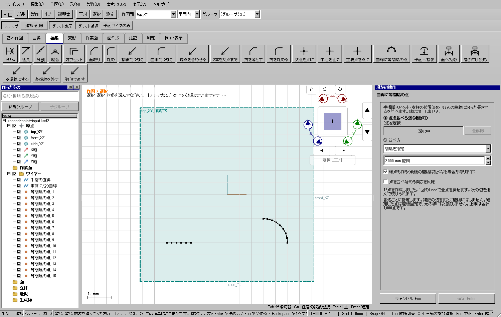
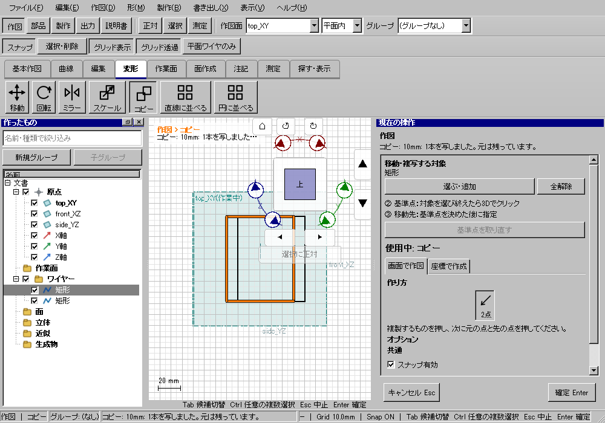

Windows全体ゲート成功。Windows用Qtで重点16件、CADリボンのTool/Modeless 43入口を検査。開発版UI 623件／配布版UI 623件。CTest：195件。旧CAD自己試験・配布ZIPの実績はリンク先の正式証拠を参照。
| 起きていたこと | 変更後と検査 |
|---|---|
| 曲面押し出しの支持面選択からロフトへ移ると輪郭ワイヤーを拾えない。 | 道具の所有者が替わる際に前の候補フィルターを解除。実リボン→輪郭クリックでロフトに1断面が入る。 |
| 出力窓で基準点・面の指定待ちにすると、その後の作図クリックを古い出力処理が取る。 | モデルレス窓の配置値は残し、別ツール開始時にクリック待ちだけ解除。3役割の再指定・窓の再利用・終了後も次の線を生成。 |
| フェイスで作図／近似の途中で「選択・削除」に入っても、面のクリックが作業面作成になる。 | 一時選択中はフェイスの道具を停止。クリックしても文書版数を変えない。 |
| 製作の分割・結合の未確定案がEscやモード切替後に残る。 | 条件を保ちつつ未確定案を破棄。実右ペインのプレビュー→Esc／別モード→次の作図を検査。 |
| 移動・コピーで基準点と移動先の段階が追いにくい。 | ②基準点のXYZと③移動先を表示。対象を維持して基準点を取り直し、配置先のクリックで1コピーを作る。 |
| 新しい点配置の混在辺解除、点数の境界、数値欄と一覧のEnterが衝突し得る。 | 行と参照を同一配列に統一。999／1000／1001点、1回目の値適用／2回目の確定、F2名称編集とEscを追加試験。 |
初回全体検証は配布573/622、本体611/622まで成功した後、両方が既定900秒で時間切れ。完了前を全件成功と伝えた途中報告は訂正した。試験を削らず、右の検索候補を全モード分作り直す処理と同じカテゴリのボタン再生成を抑止した。旧モードの取消、検索の初期化、Actionの有効状態、カテゴリの選択表示は維持する。
同じWindows機、Release・Qt offscreenの単発比較：台帳起動56.70→9.99秒、ツール切替行列178.02→66.77秒。一般の操作や全モデルへ同率の高速化を保証する値ではない。900秒の制限は変更していない。
| 作業 | 調査結果と対応 |
|---|---|
| 同じ側窓、扉、リベットの直線配置／車輪まわりの円形配置 | 既存の直線・円形配列を利用。重複ツールは追加しない。 |
| 車体曲面に沿う手摺脚・支柱の基準位置 | 端点／中点だけでは任意ピッチを作れなかったため「曲線に等間隔の点」を追加。 |
| 窓枠・サッシ、窓穴、車体の厚み | 既存オフセット、穴付き面、押し出し、投影、トリム、厚みを使う。既存機能の全件試験を維持。 |
| 模型部品を別の場所へ複写して合わせる | 移動・コピーの対象／基準点／移動先表示と取り直しを改善。 |
曲線に沿う配置と間隔・個数の区別はAutodesk Fusion公式の経路配列の説明も参照。点の確定は既存AddFeatureCommandを1候補文書でまとめ、検証と履歴の作成を1回にしている。本実装は既存幾何APIで作れる作図点の配置に限定し、部品を経路へ自動複製する機能とは区別する。
直線・円・円弧・3Dベジェ・Bスプラインを複数選択し、各辺の弧長で間隔mm／等分数を指定する。端点、開始方向反転、閉曲線の重複終点、合計1,000点を扱う。元の線は変更せず、点は座標固定。1回のUndo、Redo、KCD2保存・再読込を検査。上限1,000点の確定とUI復帰：138 ms。修正前の同条件4,685 msから短縮。小さな試験文書で確定と画面の待機120 msを含む単発測定で、全モデルの速度保証ではない。1回のUndoと次の作図も確認。


169コマンドの台帳到達性、既存441組の内部コマンド遷移、43個の実CADリボン入口から次の作図成功、形状生成・履歴・保存を調べる自己試験は別の証拠である。今回のリボン検査は全ての形状条件や全組合せを保証するものではない。説明書は専用エディターの既存試験で検査する。
ネイティブWindowsのUIAで検索欄を「曲線に等間隔」とし、候補が1件になることを確認。専用空ウィンドウのAlt+F4終了も成功。旧候補で試したCtrl+KとTabのフォーカス変化は確認できなかった。画像取得はタイムアウト、OSマウス入力は座標情報取得失敗で実行できなかった。OS上の全マウス操作成功とは扱わず、下表はQtの実ボタン・キー・マウスイベントである。配布コピーはWindows GUIサブシステムで、通常起動2条件（windows／offscreen継承時の補正）とも表示・描画・イベントループを確認した。レポートHTMLのブラウザー表示はローカルURLの制限により未確認。HTML内の画像はローカル画像ビューアで確認した。
| Windows用Qtの重点試験 | 結果 | 時間 |
|---|---|---|
| HP-TOOLS distinct tool illustrations | passed | 2.491秒 |
| HP-CONTINUITY support-face pick to loft wire via ribbon | passed | 1.380秒 |
| HP-CONTINUITY output destination pick to drawing via ribbon | passed | 1.135秒 |
| HP-CONTINUITY output point and face picks reuse and close safely | passed | 2.223秒 |
| HP-CONTINUITY face action pauses during selection editing | passed | 1.689秒 |
| HP-CONTINUITY fabrication partition Escape and mode change | passed | 1.677秒 |
| HP-CONTINUITY visible ribbon tool variants allow the next drawing operation | passed | 15.239秒 |
| HP-CONTINUITY copy base retake and destination roles | passed | 1.084秒 |
| HP-CURVEPOINTS multiple edges preview commit history save and next tool | passed | 4.599秒 |
| HP-CURVEPOINTS three dimensional spline arc length spacing | passed | 4.489秒 |
| HP-CURVEPOINTS output bound cancel and closed curve deduplication | passed | 2.539秒 |
| HP-CURVEPOINTS mixed segments preserve exact selection rows | passed | 1.749秒 |
| HP-CURVEPOINTS 999 1000 and 1001 output boundaries | passed | 2.315秒 |
| HP-CURVEPOINTS first numeric Enter previews second confirms | passed | 1.956秒 |
| HP-CURVEPOINTS tree label Enter and Escape never generate points | passed | 1.951秒 |
| HP-CONTINUITY mode and category reuse preserves commands and search | passed | 0.798秒 |
以下の時刻はUTC。日本時間は9時間を加える。並列担当の作業時間は加算していない。
| 工程 | 開始 | 終了 | 経過時間 | 終了コード |
|---|---|---|---|---|
| doctor | 2026-10-27T15:06:04.631063+00:00 | 2026-10-27T15:06:06.389143+00:00 | 1.76秒 | 0 |
| configure | 2026-10-27T15:06:06.389143+00:00 | 2026-10-27T15:06:20.190756+00:00 | 13.80秒 | 0 |
| inventory | 2026-10-27T15:06:20.190756+00:00 | 2026-10-27T15:06:20.334435+00:00 | 0.14秒 | 0 |
| build-3 | 2026-10-27T15:06:23.007739+00:00 | 2026-10-27T15:06:34.015660+00:00 | 11.01秒 | 0 |
| preflight | 2026-10-27T15:06:34.015660+00:00 | 2026-10-27T15:06:39.099178+00:00 | 5.08秒 | 0 |
| build-5 | 2026-10-27T15:06:39.104165+00:00 | 2026-10-27T15:07:09.413945+00:00 | 30.31秒 | 0 |
| ui-inventory | 2026-10-27T15:07:09.414942+00:00 | 2026-10-27T15:07:09.568167+00:00 | 0.15秒 | 0 |
| tests | 2026-10-27T15:07:09.728901+00:00 | 2026-10-27T15:33:39.068367+00:00 | 1589.34秒 | 0 |
| legacy-self-test | 2026-10-27T15:33:39.076252+00:00 | 2026-10-27T15:33:50.122565+00:00 | 11.04秒 | 0 |
追加：V2CurvePointsTool.h/.cpp、V2SelfTestToolContinuity.cpp、固有アイコン、操作画像、手順ページ。既存CreatePoint、弧長評価、履歴・保存を利用し、製品コアの公開APIや保存形式は変更していない。新規コマンドの説明書を1回で生成できるよう、相互リンク監査の順序も修正した。
削除したファイルは0。使用中のCAD、他担当の未コミット模型、旧配布、worktree、増分ビルド資産は保全した。失敗した事前検査や重点試験の記録も残した。